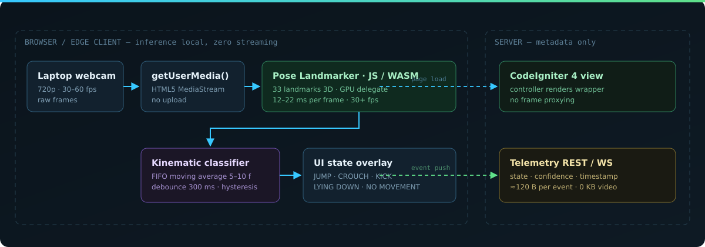

Edge AI Motion Classifier & CodeIgniter 4 Pipeline
Zero-streaming backend · sub-25 ms edge inference · MediaPipe Pose Landmarker (33 landmarks, 3D) running entirely in the browser.
EXECUTIVE SUMMARY
A pose-based motion classifier that runs where the camera is. The browser captures frames with getUserMedia(), runs the MediaPipe Pose Landmarker through WebAssembly with the GPU delegate, and classifies movement from 33 3D landmarks — all before a single byte leaves the machine.
The CodeIgniter 4 layer does one job: render a clean view wrapper. There is no frame proxying, no video queue and no media worker on the server. Only state events (state, confidence, timestamp ≈ 120 B) reach the backend over REST or WebSocket, so bandwidth stays flat no matter how long a session runs — and the video never exists outside the browser tab.
ARCHITECTURE FLOW

Webcam → getUserMedia → Pose Landmarker (WASM/GPU) → kinematic classifier → UI overlay. Dashed paths are the only things that cross the network boundary.
KINEMATICS & MATHEMATICAL THRESHOLDS
| MOVEMENT | SIGNAL & FORMULA | THRESHOLD | EDGE HANDLING |
|---|---|---|---|
| Jumping | Hip Δy (23/24) + ankle Δy (27/28) v = Δy / 5 |
v > 0.045 · body_height | Feet cut off by the webcam frame → hip-only fallback (Δy > 6% torso length) |
| Crouching | Hip–knee–ankle interior angle at the knee θ = angle(hip−knee, ankle−knee) |
θ < 120° + hip below calibrated baseline | Baseline hip position calibrated from 60 standing frames (median) |
| Kicking | Ankle radial displacement from pelvic midpoint d = |ankle_x − pelvis_x| / shoulder_width |
d > 1.15 | Anchor-leg stability verified ≥ 4 frames (rejects walk cycles) |
| Lying down | Torso vector, shoulder midpoint → hip midpoint φ = atan2(t.x, −t.y) |
|φ| > 60° for ≥ 10 frames | Also triggers when the whole body drops into the lower third of frame |
MOVING AVERAGE FIFO
5–10 frame FIFO buffer per landmark, per axis. Removes single-frame landmark jitter (~1–2 px at 720p) before any threshold is evaluated.
DEBOUNCE 300 MS
State-lock after a detection fires, plus hysteresis (enter 0.045 / exit 0.030) so landing does not flicker between JUMP and CROUCH.
RUNTIME BUDGET
Inference 12–22 ms/frame, classifier < 2 ms, WASM heap ~30 MB. Fits the 33 ms frame budget at 30 FPS with room for rendering.
2 pages · system flow, threshold table, state machine, performance budget